Kitsune
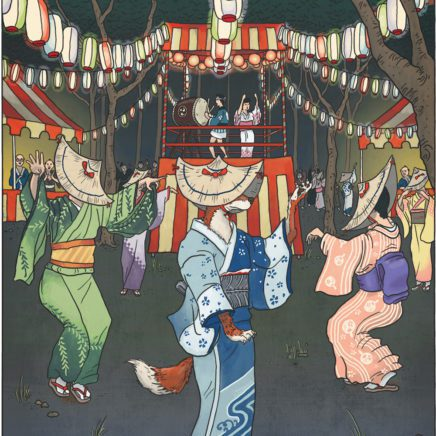Translation: Fox
Habitat: Found throughout Japan, especially in forests and mountains.
Diet: Omnivorous, though often associated with a fondness for fried tofu.
Appearances:
Foxes, or kitsune, are found all across Japan. They are identical to wild foxes found elsewhere in the world apart from their incredible magical powers. Their cute faces and small size make them particularly loved by most people.
Behaviour:
There are two major variations of Kitsune.
Holy Foxes
Holy foxes are servants of the Shinto deity Inari, and Inari's shrines are decorated with statues and images of these foxes.
Legends tell of celestial foxes providing wisdom or service to good and pious humans.
These holy foxes act as messengers of the gods and mediums between the celestial and human worlds. They often protect humans or places, provide good luck, and ward evil spirits away.
Wild Foxes
Wild foxes are those which delight in mischief, pranks, or evil. There are stories in which wild foxes trick or even possess humans, and cause them to behave strangely. Despite this wicked nature, even wild foxes keep their promises, remember friendships, and repay any favors done for them.
Interactions:
Kitsunes vex their targets by creating phantom sounds and sights, stealing from them, or otherwise humiliating them publicly.
Certain mental disorders have been attributed to possession by kitsune (known as 狐憑き kitsunetsuki).
Mysterious illusory fires and strange lights in the sky are said to be caused by their magic, and are known as 狐火 kitsunebi, or “fox fire.”
Jorōgumo
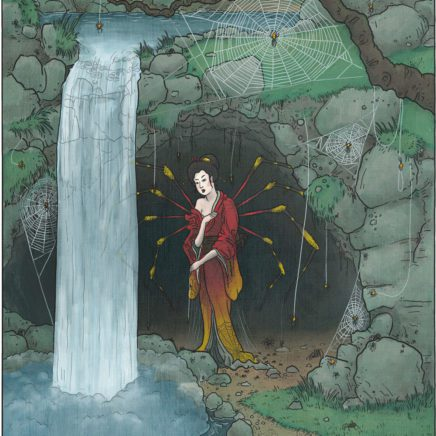Translation: entangling bride; alternatively whore spider
Habitat: cities, towns, rural areas, forests, and caves
Diet: young, virile men
Appearances:
In Japan, some spiders are known to possess amazing supernatural powers. One of these is the jorōgumo, known as the golden orb-weaver in English.
The jorōgumo is the most well-known of the arachnid yōkai, and is found all over the Japanese archipelago except for the northern island of Hokkaidō.
Their body size averages between two to three centimeters long, but they can grow much larger; some are massive enough to catch and eat small birds.
Renowned for their size, their vividly beautiful colors, and the large and strong webs they weave, the beautiful jorōgumo are also famous for the cruel destruction they wreak on young men.
Written with modern kanji, their name means “entangling bride.” However, these characters were added much later to cover up the original meaning of jorōgumo—“whore spider.”
Behaviour:
Jorōgumo live solitary lives, both as spiders and as yōkai.
When a golden orb-weaver reaches 400 years of age, it develops magical powers and begins to feed on human prey instead of insects.
Jorōgumo make their nests in caves, forests, or empty houses in towns.
Possessing a cunning intelligence and a cold heart, they see humans as nothing more than insects to feed on.
They are skillful deceivers and powerful shape-shifters, usually appearing as young, sexy, and stunningly beautiful women.
Interactions:
Jorōgumo's favorite prey are young, handsome men looking for love—or other favors.
When a jorōgumo spots a man she desires, she lures him into her home with promises of affection. He is never seen again.
Jorōgumo spin silk threads strong enough to ensnare a grown man so that he cannot escape.
They also have powerful venom that can slowly weaken a man day by day, allowing the spider to savor her victim's long and painful death.
Jorōgumo can control other, lesser spiders, even employing fire-breathing spiders to burn down the homes of any suspicious meddlers.
They are such skillful predators that a jorōgumo can operate like this for years and years, even in the middle of a busy city, piling up hundreds of desiccated skeletons of foolish young men.
Kirin
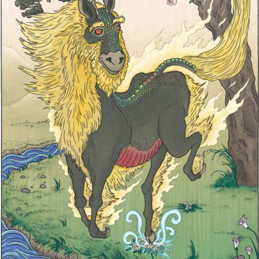Translation: none; based on the Chinese name for the same creature
Habitat: areas ruled by a wise and benevolent leader
Diet: purely vegetarian; never harms another creature
Appearances:
The kirin is one of the rarest, most awesome and powerful creatures ever known in East Asia. It is a regal animal, holy and highly revered.
The kirin is often considered a god in its own right. Resembling a deer with scales like a dragon's covering its body, the kirin is a chimerical beast.
It has a tail like an ox and a flowing mane. Its body and mane are covered in brilliant, holy fire and its face is the picture of utter serenity.
Behaviour:
A gentle animal, the kirin never eats the flesh of other beings, and takes great care never to tread on any living thing, even insects.
When it walks, it does so without trampling a single blade of grass. Its beauty is only surpassed by its rarity; the unicorn-like kirin only appears during periods of world peace.
They are seen only in lands owned by wise and benevolent people and during the reigns of noble and enlightened rulers, where they herald a golden age.
Although kirin never harm good and pure souls, they are swift and fierce to attack if threatened, breathing holy fire from their mouths.
Interactions:
Because kirin are beasts of purity and goodness, they have been used in carvings and paintings as symbols of these virtues since early times.
They are also seen as symbols of justice and wisdom. Because of their holiness, images of kirin frequently adorn temples and shrines.
Omens of great luck and fortune, the appearance of a kirin is believed to be a sign of the arrival of a great leader or a wise man.
Bakekujira
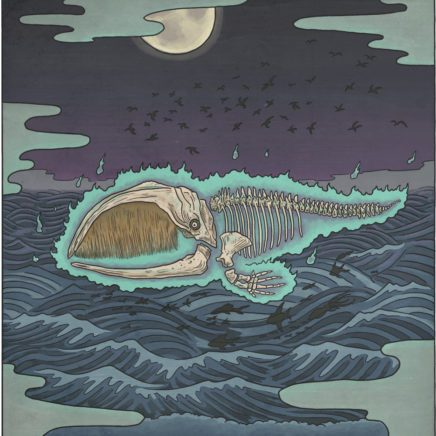Translation: Ghost whale
Alternate names: Hone Kujira (“Bone Whale”)
Habitat: Sea of Japan, especially near coastal villages
Diet: None
Appearances:
Bakekujira are enormous whale skeletons that rise from the ocean depths during rainy nights. They are often accompanied by flocks of eerie birds and strange, unrecognizable sea creatures.
Behaviour:
These spectral whales are believed to be the vengeful spirits of whales slaughtered by humans. Their appearance is considered a dire omen, bringing curses such as famine, disease, and disaster to nearby villages.
Legends:
In one famous tale, villagers on the Shimane Peninsula mistook a ghost whale for a living one and attempted to hunt it. Their weapons passed harmlessly through the skeleton. As they realized the truth, the sea erupted with unnatural creatures, and the ghost vanished into the waves. Soon after, their village was struck by misfortune, believed to be the Bakekujira's curse.
Hone Onna
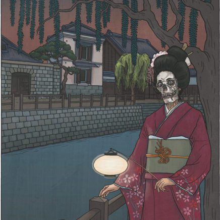Translation: Bone woman
Habitat: Dark streets, alleys, graveyards
Diet: None; sustains herself through intimacy and love
Appearances:
Hone onna appear as beautiful young women, often indistinguishable from how they looked in life. However, beneath this illusion lies a decaying skeleton. Only those with strong faith or clarity of mind can see through the disguise.
Behaviour:
These spirits return from the grave, drawn by lingering love for their former partners. At night, they visit their lovers, believing themselves still alive. Their presence slowly drains the vitality of those they love, leaving the victim sick and weakened over time.
Interactions:
The ghost's visits continue unnoticed for days or weeks, until someone—often a friend or servant—realizes the truth. Spiritual wards and charms can repel her, but only if the house's master chooses to use them. Many victims, unable to resist the allure of lost love, ultimately welcome her back, even at the cost of their own life.
Legends:
The most well-known tale is that of Otsuyu from Botan Dōrō ("The Tale of the Peony Lantern"), a tragic ghost story adapted across Japanese theater and literature since the 17th century.
Hitodama
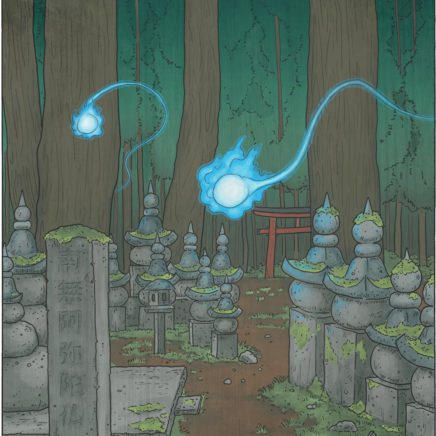Translation: Human soul
Habitat: Graveyards, funeral homes, places of recent death
Diet: None
Appearances:
Hitodama appear as glowing orbs—red, orange, or blue-white—floating silently a few feet above the ground. They leave faint trails of light behind them, which helps distinguish them from other ghostly fireballs.
Behaviour:
These spirits are usually seen just before or after someone dies, as the soul leaves the body. They drift quietly through the air and are most commonly spotted at night in summer. Occasionally, they also appear during fainting episodes, only to return when the person revives.
Though eerie, hitodama are harmless. They should not be mistaken for more dangerous fireball yōkai.
Shuten Dōji
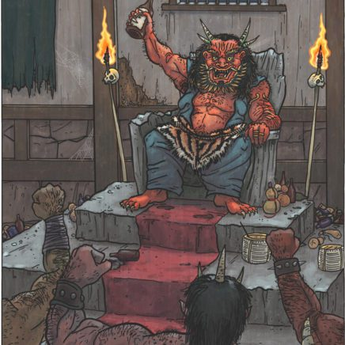Translation: “Little Drunkard”
Habitat: Mount Ōe, near Kyoto
Diet: Human flesh and blood
Legend:
Once a gifted human child born of a dragon and a mortal woman, Shuten Dōji was feared for his strength and intellect. Mocked as a demon child, abandoned by his mother, and shunned by others, he turned bitter and took to drink—earning the nickname “Shuten Dōji.”
During a drunken prank, an oni mask fused to his face. Ashamed, he fled into the mountains where he grew in strength and dark magical power. Gathering outcasts and yokai, he became the king of the oni, preying on Kyoto and abducting noblewomen to feast on in his castle on Mount Ōe.
His reign ended when the hero Minamoto no Yorimitsu tricked him with poisoned sake and beheaded him. Even decapitated, Shuten Dōji’s head tried to bite Yorimitsu, and had to be buried far from the capital.
Sutoku Tennō

Translation: Emperor Sutoku
Habitat: Sanuki Province (in exile), later Kyoto (as a spirit)
Type: Onryō or Tengu (vengeful spirit)
Legend:
Sutoku Tennō was once emperor of Japan, but was tricked into retiring by Emperor Toba and later betrayed by the court. His attempt to restore his family's honor led to the Hōgen Rebellion, which ended in defeat and exile.
In exile, he became a monk, but his holy texts—rumored to be written in blood—were rejected by the court. He died full of rage in 1164, and strange events followed: his body did not decay, blood seeped from the earth, and natural disasters plagued Kyoto.
For centuries, Sutoku's vengeance was blamed for civil unrest, imperial decline, and war. Though later enshrined as a kami, his curse is still feared today.
Tatarigami
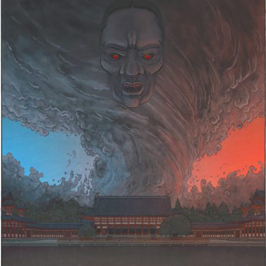Translation: Curse god / Curse spirit
Habitat: Varies; often tied to historical sites or shrines
Diet: Vengeance
Appearance:
Tatarigami are powerful spirits or deified ghosts that bring calamity—plagues, war, famine, and disasters. They include gods like Emperor Gozu and Yamata no Orochi, as well as wrathful onryō like Sutoku Tennō and Taira no Masakado.
Behavior:
These spirits curse those who wronged them. To prevent disaster, they are worshipped in shrines. One example is the Gion Matsuri in Kyōto, originally held to appease Susanoo and Emperor Gozu during outbreaks of disease.
Appeasing tatarigami was a key duty of the onmyōji, and belief in them helped solidify the power of onmyōdō in Japan's spiritual and political life.
Shōgorō
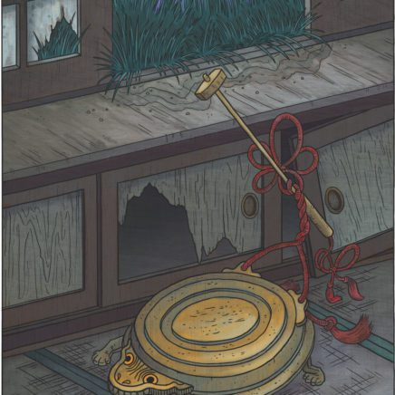Translation: "Gong-goro" or "ghost gong"
Habitat: Buddhist temples, household storage
Diet: none
Appearance:
A shōgorō is a tsukumogami—a spirit inhabiting a worn-out shōgo, a small metal gong used in Buddhist services. When forgotten and left unused, it awakens as a yokai.
Behavior:
Shōgorō are harmless but can be startling. At night, they wander while striking their bodies like a metal turtle, creating eerie gong sounds that may disturb sleep.
Origin:
The name is a pun combining "shōgo" (gong) and "gorō," a common male name suffix. It can also be read as "shōgo" plus "goryō," a noble ghost type, linking it to aristocratic spirits.
Legend:
In 18th-century Osaka, wealthy merchant Yodoya Tatsugorō lost everything to the bakufu, including his prized golden chicken. His restless spirit mistakenly attached to a nearby gong (shōgo) instead of the chicken, transforming the instrument into a tsukumogami.
Karakasa kozō
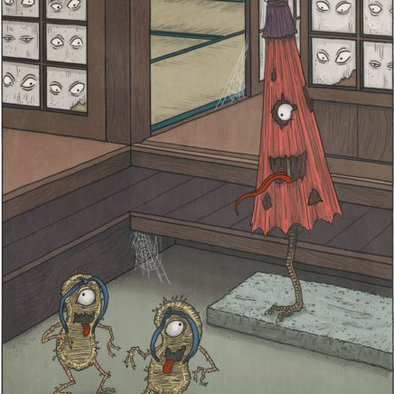Translation: paper umbrella priest boy
Alternate names: kasa obake, karakasa obake
Diet: none
Appearance:
These playful yōkai are transformations of Chinese-style oiled-paper umbrellas. They have one large eye, a long protruding tongue, and hop around on one or two legs.
Behavior:
Karakasa kozō are mischievous rather than dangerous. They surprise people by sneaking up and giving a big, oily lick with their tongues. Though startling, they are harmless.
Caution is advised as other umbrella tsukumogami can be harmful and should not be confused with the karakasa kozō.
Oi no Bakemono
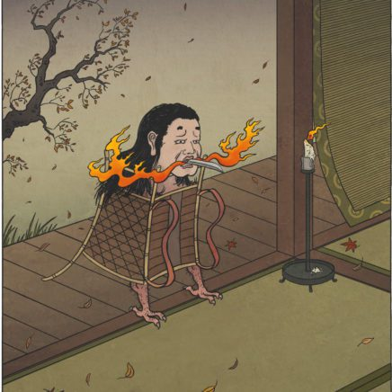Translation: backpack monster
Habitat: homes and temples where pilgrims might stay
Diet: none
Appearance:
Oi no bakemono are tsukumogami—spirits inhabiting old wooden backpacks called oi. They resemble birds with long black hair sprouting from their heads, three-toed avian feet, and carry a broken sword blade in their mouths that looks like a pointed beak. They can breathe fire.
Origin:
Oi are special backpacks used by Buddhist monks, pilgrims, and yamabushi during long journeys, carrying religious implements and necessities. The oi no bakemono is said to appear in the book Ehon musha bikō, where one haunted the bedroom of Ashikaga Tadayoshi, a 14th-century general and government official.